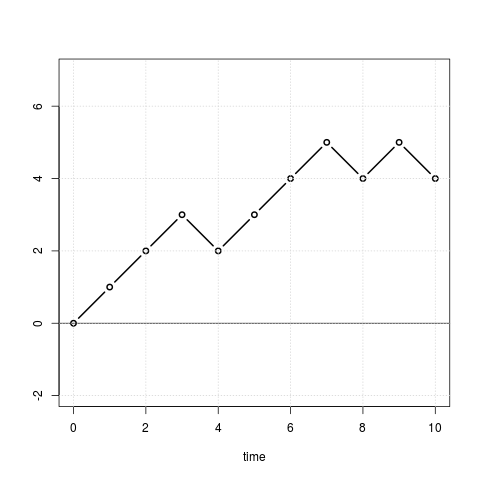
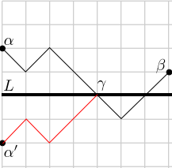
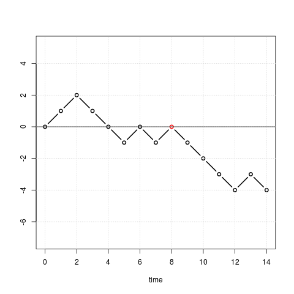
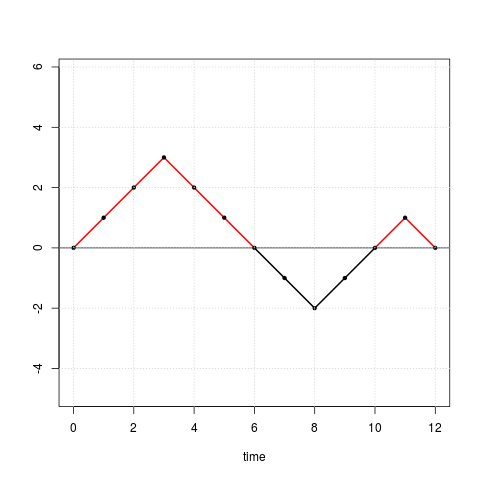
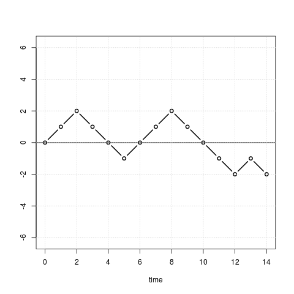
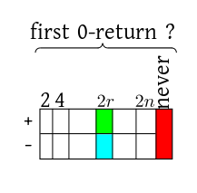
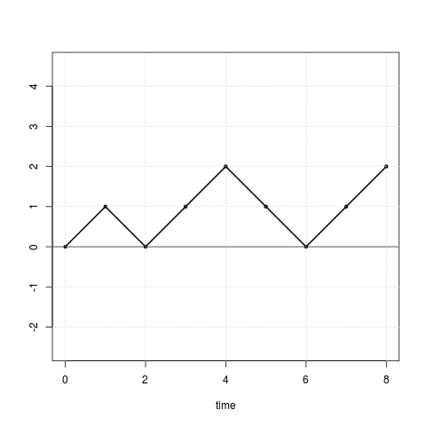
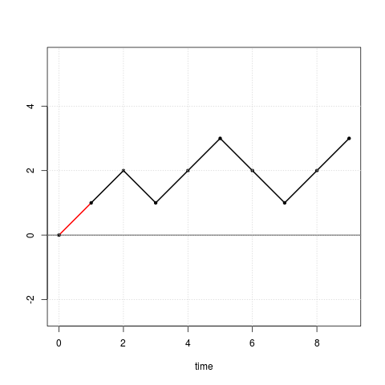
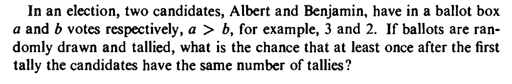
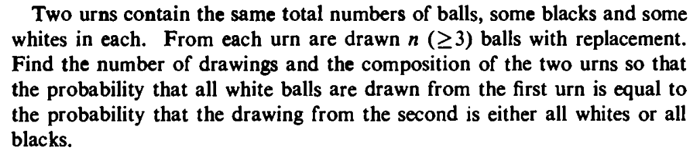

|  |
|---|
| Random walk |
The asp=1 in the plot command
keeps the plot area aspect ratio equal to 1, i.e., a
square. The abline command draws a horizontal line
through 0. |
x = sample(c(-1,1), 100, rep=T) plot(cumsum(x),ylab='random walk', xlab='time', ty='l',asp=1) abline(h=0)Share market values show such behaviour. Clearly, there are $2^{10}$ such possible paths. Since the man is a drunkard we assume that all these are equally likely.
EXAMPLE 1: Find the probability that he ends up at his starting position after 10 steps.
SOLUTION: It is the total number of paths from $(0,0)$ to $(10,0)$ divided by $2^{10}.$ Now, each such path must have the same number of up's and down's. So the number is $\binom{10}{5}.$ ///EXERCISE 1: Find the probability that the drunkard ends up at any given $k\in{\mathbb Z}$ in exactly $n$ steps.
Clearly, the total number of paths from $(a,p)$ to $(b,q)$ is $N_{b-a,q-p}.$EXAMPLE 2: Consider all paths of length $2n$ starting from $(0,0).$ What is the probability that the path returns to $0$ at time $2n$?
SOLUTION: There are $2^{2n}$ paths, all equally likely. So $|\Omega| = 2^{2n}.$ Let $A$ be the event that the path ends at $(2n,0).$ Then $|A| = N_{2n,0}.$ So $P(A) = \frac{|A|}{|\Omega|} = \frac{N_{2n,0}}{2^{2n}}. $ ///
EXERCISE 2:
Find the numerical value of the probability you found in the
above example for $n=5.$ Check it by running the following
code:
event = c()
for(k in 1:5000) {
x = sample(c(-1,1), 10, rep=T)
event[k] = (sum(x)==0)
}
mean(event)
Proof: Keep an eye on this picture while reading the proof:
|  |
|---|
| Reflection principle |
EXAMPLE 3: Again take a horizontal line $L$ (at height $h$) and two points $A:(a,p)$ and $B:(b,q)$ both above (not on) $L.$ Here $a<b.$ How many paths are there from $A$ to $B$ that does not meet $L?$
SOLUTION: First count all paths from $A$ to $B.$ From it subtract the number of paths that meet $L.$ Total number of paths from $A$ to $B$ is $N_{b-a,q-p}.$ The number of paths from $A$ to $B$ that meet $L$ may be found using the reflection principle. The reflection of $A$ along $L$ is at $A':(a,2h-p).$ So the required number is $N_{b-a,q-2h+p}.$ Hence the final answer is $N_{b-a,q-p}-N_{b-a,q-2h+p}.$ ///EXAMPLE 4: How many paths are there from $(0,0)$ to $(10,3)$ that are strictly positive at all times $>0?$
SOLUTION: This is very similar to the exercise above (with $L$ given by the horizontal line at height $0$), except that we start on the line itself. However, it is obvious that our path must go to $(1,1)$ after the first step. So the last exercise may be applied between $A:(1,1)$ and $B:(10,3).$ ///Proof: Such a path must pass through $(n-1,r-1)$ and $(n,r).$ Also it must never meet the the line at height $r$ up to and including time $n-1.$
By reflection principle the path up to time $n-1$ may be chosen in $N_{n-1,r-1}-N_{n-1,r+1}$ ways. The step from time $n-1$ to $n$ is forced (it has to move up). Hence the result. [QED]Proof: We need to find the number of paths with maximum $r.$
We shall split the set of all such paths based on where the path ends. Clearly, it can end somewhere $\leq r.$ Fix any end point $A:(n,k)$ for $k\leq r.$ So enough to count all paths with maximum $r$ and ending at some given $A.$ Notice that it is enough to count all paths with maximum $\geq r$ and ending at $A.$ This is $N_{n,2r-k}$ by the reflection principle. So the number of paths with maximum $r$ and ending at $A$ is $$ N_{n,2r-k} - N_{n,2(r+1)-k}. $$ We shall now sum this over $k\leq r.$ Two points are to be noted about this:Proof: Such a path must either always be positive. Or always be negative. Clearly, the number of all-positive paths is the same as that of all-negative paths.
An all-positive path must visit $(1,1)$ immediately after $(0,0).$ So enough to compute the number of all-positive paths starting from $(1,1).$ Where can such a path end? It can end at $2r$ for some $r\in\{1,...,n\}.$ By the reflection principle, the total number of all-positive paths from $(1,1)$ to $(2n,2r)$ is the total number of $(1,1)\rightarrow(2n,2r)$ paths minus the total number of $(1,-1)\rightarrow(2n,2r)$ paths, i.e., $N_{2n-1,2r-1}-N_{2n-1,2r+1}.$ So the total number of all-positive paths is the telescoping sum $$ (N_{2n-1,1}-N_{2n-1,3}) + (N_{2n-1,3}-N_{2n-1,5}) + \cdots + (N_{2n-1,2n-1}-N_{2n-1,2n+1}) = N_{2n-1,1}-N_{2n-1,2n+1} = N_{2n-1,1}, $$ since $N_{2n-1,2n+1}=0$ ($\because 2n+1 > 2n-1$). Combining all-positive and all-negative paths, the total count is $2N_{2n-1,1} = 2\binom{2n-1}{n}=\frac{2(2n-1)!}{(n-1)!n!} =\frac{(2n!)}{n!n!} =\binom{2n}{n} = N_{2n,0}.$ [QED]Proof: Let $A$ be the set of all the paths that never return to 0.
Let $B$ be the set of all the paths that never return to before or at time $2n-2.$ (We are always considering paths of length $2n.$) Then we want to find $|B\setminus A|.$ Since $A\subseteq B,$ this is $|B|-|A|.$ Now $|A| = N_{2n,0}$ by the No 0-return theorem. Also, by the same theorem, $|B| = 2^2N_{2n-2,0}.$ (Why?) Hence the result. [QED]EXERCISE 3: Consider all paths of length $2n$ starting at $(0,0).$ What is the number of these paths that return to $0$ at $2r$ for some given $r < n?$ Also, how many of these return to 0 from the positive side?
Proof:
|  |
|---|
| A typical such path |
|  |
|---|
EXAMPLE 5: Draw a path of length 10 starting from $(0,0)$ that spends exactly 5 time units in the positive side.
SOLUTION: First try yourself. Else, you'll miss the fun! ///Proof: Let's warm up by looking at an example with $n=7$ and $k=4.$
|  |
|---|
| First 0-return at $4$ |
|  |
|---|
| Different cases |
#($2r$ length paths with first 0-hit from positive side at $2r$)$\times$ #($2n-2r$ length paths with exactly $2k-2r$ positive segments).Out of the two factors we already know a nice formula for the first one from the First 0-return theorem. Also, the second factor is precisely of the type that we want to find in this theorem. However, it is for a shorter path (length being $2n-2r$ instead of $2n$). So induction on path-length may help. Notice that here $r\in\{1,...,k\}.$ (Otherwise, you get more than $2k$ segments above the $x$-axis.) Next look at the blue case. How many such paths are possible such that the first 0-hit occurs at $2r$ from the negative side? The answer is
#($2r$ length paths with first 0-hit from negative side at $2r$)$\times$ #($2n-2r$ length paths with exactly $2k$ positive segments).Again, the first factor is tractable by the First 0-return theorem, and the second factor may hopefully be dealt with by induction. Notice that here $r\in\{1,...,n-k\}.$ (Otherwise, you get less than $2k$ segments above the $x$-axis.) We shall use induction on $n\geq k.$ (Here we are holding $k$ fixed.) Basis: Here we consider $n=k,$ i.e., the case where all the segments are above the $x$axis. We shall employ a trick here. Shift the path by $(1,1).$ and connect $(0,0)$ to $(1,1)$ The following diagrams would help you to understand the transformation.
|  |
|---|
| The original path |
|  |
|---|
| The transformed path (the extra segment shown in red) |
$\frac 12\sum_{r=1}^k$ #{$2r$ length paths with first 0-return at $2r$}$N_{2n-2k,0} N_{2k-2r,0}$ +$\frac 12\sum_{r=1}^{n-k}$ #{$2r$ length paths with first 0-return at $2r$}$N_{2k,0} N_{2n-2k-2r,0}$Take terms free of $r$ out of the summations:
$\frac 12N_{2n-2k,0}\sum_{r=1}^k$ #{$2r$ length paths with first 0-return at $2r$}$N_{2k-2r,0}$ +$\frac 12N_{2k,0}\sum_{r=1}^{n-k}$ #{$2r$ length paths with first 0-return at $2r$}$ N_{2n-2k-2r,0}$Of course, you can now use the First 0-return theorem and start algebraic manipulations. But can you see directly that the first sum is just $N_{2k,0}?$ Similarly, what is the second sum? [QED]
EXERCISE 4: (Ballot problem) two candidates are contesting in a vote. There are $n$ voters who have cast their votes. The votes are being counted with the $n$ ballot papers ordered randomly. Candidate $A$ has $p$ votes and candidate $B$ gets $q=n-p (<p)$ votes. Show that the probability that during the counting $A$ was always leading is $$ \frac{p-q}{p+q}. $$
EXERCISE 5:
|  |
|---|
EXERCISE 6: Let $a,b>0.$ Show that the number of paths from $(0,0)$ to $(n,a)$ that are always $>-b$ is $N_{n,a}-N_{n,a+2b}.$
EXERCISE 7: Let $b> a> 0.$ Show that the number of paths from $(0,0)$ to $(n,a)$ that are always $<b$ is $N_{n,a}-N_{n,2b-a}.$
EXERCISE 8: Show that if $a> c> 0$ and $b>0$, then the number of paths from (0,0) to $(n,c)$ that attain height $a$ and then attain height $-b$ before finishing at $(n,c),$ is $N_{n,2a+2b+c}.$ The paths may have also attained height $-b$ before attaining height $a.$
EXERCISE 9: Let $a>c>0$ and $b>0.$ Show that the number of paths from $(0,0)$ which touch the horizontal line at height $a$ and then lead to $(n,c)$ without having touched the horizontal line at height $-b$ is $N_{n,2a-c}-N_{n,2a+2b+c}.$ (Note that the path may touch the horizontal line at height $-b$ before hitting the line at height $a.$)
EXERCISE 10: Prove that there are as many paths from (0,0) to $(2n+2,0)$ with all interior vertices $>0$ as there are paths from (0,0) to $(2n,0)$ where all interior vertices are $\geq 0.$
EXERCISE 11: True or false: The probability that before time $2n$ there occur exactly $r$ returns to the origin equals the probability that a return occurs at time $2n$ preceded by at least $r$ returns.
EXERCISE 12: Consider random paths of length $2n$ starting from $(0,0).$ Let $k\in\{1,...,n\}.$ Consider the two events:
$A = $ the path passes through $(2n,0)$ and the maximum height of the interior vertices is $\geq k.$and
$B = $ the path passes through $(2n,2k).$Show that $P(A) = P(B).$ Is this true if $k\leq 0?$ Is it true if $k>n?$
EXERCISE 13: Find the fallacy in the following argument: Consider the set of all paths of length 10 starting from $(0,0).$
Let $A = $set of paths that never return to 0. Let $B = $set of paths that never return to 0 at or before time 8. Now define $C_k$ as the set of all paths that do not hit 0 at time $2k.$ Then $A = \cap_1^5 C_k$ while $B = \cap_1^4 C_k.$ So $|A|\leq |B|.$ Again, any path that has not hit 0 at or before time 8 can be continued for two more time units without hitting 0. So $|B| \leq |A|.$ Hence $|A|=|B|.$EXERCISE 14:
|  |
|---|